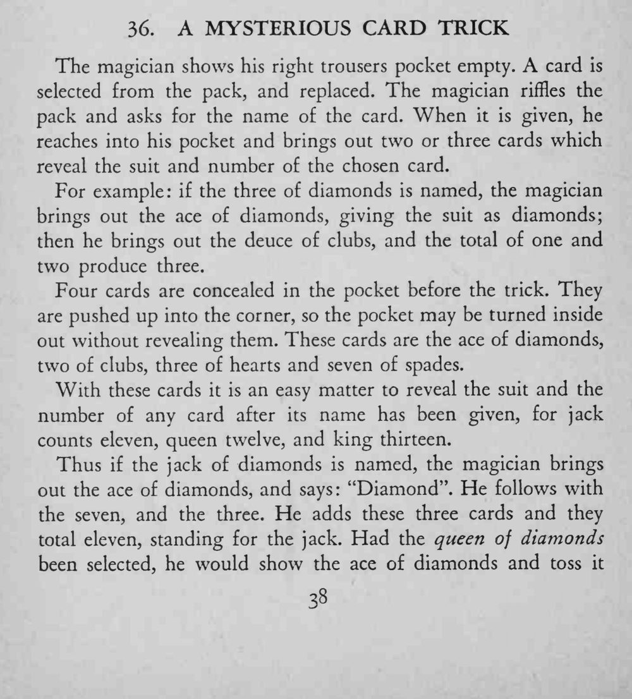
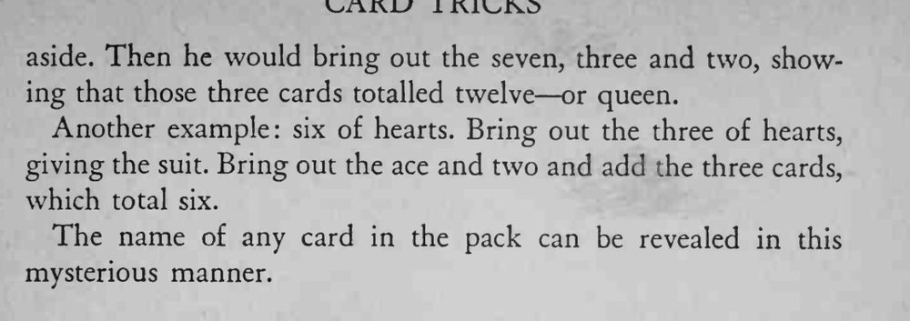

魔术师从空口袋里随手摸出几张牌，这些牌的花色与点数加起来，正好拼出观众刚说出的那张牌。
四张牌要推到袋角，翻口袋时它们才不会掉出来。


The magician shows his right trousers pocket empty. A card is selected from the pack, and replaced. The magician riffles the pack and asks for the name of the card. When it is given, he reaches into his pocket and brings out two or three cards which reveal the suit and number of the chosen card. For example: if the three of diamonds is named, the magician brings out the ace of diamonds, giving the suit as diamonds; then he brings out the deuce of clubs, and the total of one and two produce three. Four cards are concealed in the pocket before the trick. They are pushed up into the corner, so the pocket may be turned inside out without revealing them. These cards are the ace of diamonds, two of clubs, three of hearts and seven of spades. With these cards it is an easy matter to reveal the suit and the number of any card after its name has been given, for jack counts eleven, queen twelve, and king thirteen. Thus if the jack of diamonds is named, the magician brings out the ace of diamonds, and says: "Diamond". He follows with the seven, and the three. He adds these three cards and they total eleven, standing for the jack. Had the queen of diamonds been selected, he would show the ace of diamonds and toss it aside. Then he would bring out the seven, three and two, showing that those three cards totalled twelve or queen. Another example: six of hearts. Bring out the three of hearts, giving the suit. Bring out the ace and two and add the three cards, which total six. The name of any card in the pack can be revealed in this mysterious manner.